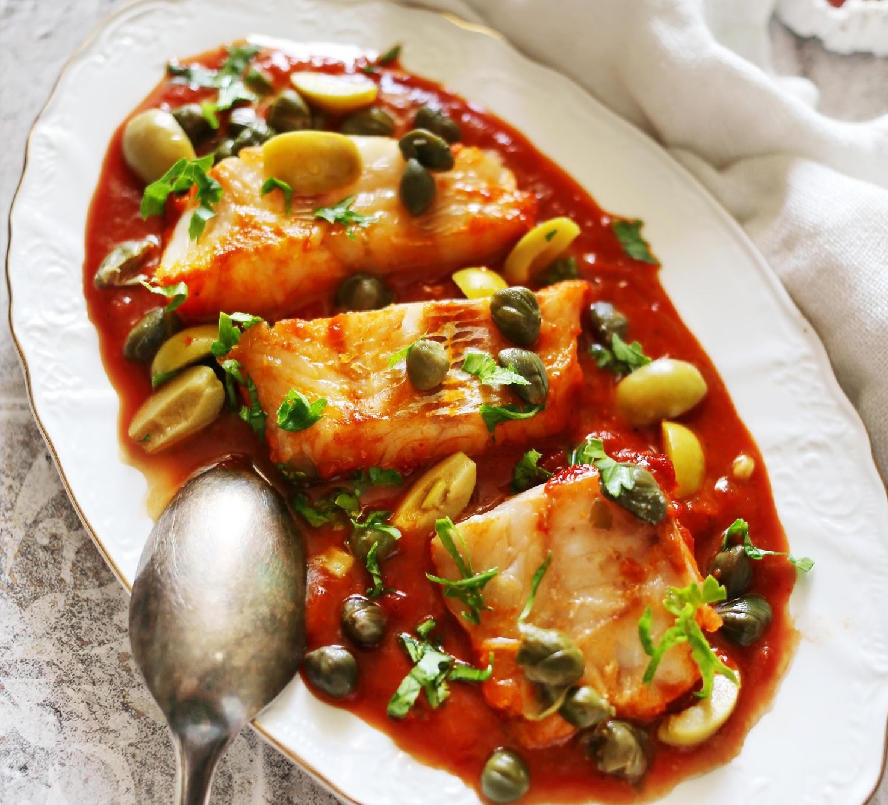

Летнее и яркое блюдо, которое также можно приготовить и зимой, используя пассату.
Лучше выбирать очень спелые помидоры; для более насыщенного вкуса можно добавить в соус дополнительно 1 ст. л. томатной пасты. А если используется пассата, наоборот, влить немного воды, чтобы соус не был слишком густым.
Оливки с косточками, которые продаются в гурмэ-отделах магазинов на развес, гораздо вкуснее консервированных без косточки. Очистить их от косточек несложно: нужно надавить на оливку плоской стороной большого ножа, она треснет, и останется только удалить косточку.
для подачи: